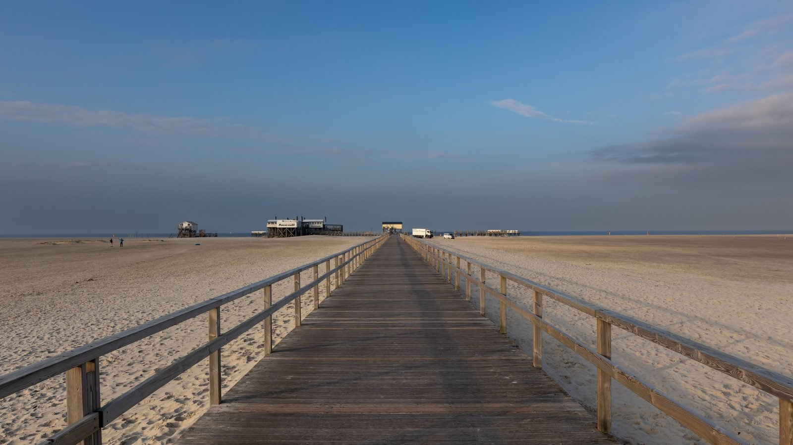

Itapema · Infraestrutura
Itapema · InfraestruturaA alça da BR-101 em Itapema abriu um dia depois do prazo anunciado em abril, e 85 dias antes do contrato prorrogado em setembro
Outra obra de Itapema medida pelo prazo que estava no papel.
A Prefeitura de Itapema assinou em 19 de agosto o contrato 133/2026, no valor de R$ 7.817.940,54, para reurbanizar a orla da Praia da Ilhota. O edital previa gastar R$ 9.922.057,68, então a proposta vencedora ficou R$ 2.104.117,14 abaixo, um desconto de 21,21%. A obra cobre 5.732,87 m² na Rua Mil e tem 15 meses de vigência, até 18 de novembro de 2027. O projeto prevê calçadão acessível, passarela e mirante de madeira, deck, playground e acessos controlados para proteger a restinga. Levantamos tudo no Portal Nacional de Contratações Públicas, e até esta data a Prefeitura não divulgou a contratação no seu mural de notícias.
Em 30 segundos · Modo de Leitura, formato original Santa Informa
A Ilhota é um bairro de Itapema.
Fica na ponta norte, colado na BR-101.
Tem praia, costão e a foz de um rio.
A orla dela vai ser reformada.
A Prefeitura já assinou o contrato.
Foi em 19 de agosto deste ano.
É o contrato 133/2026.
O valor é R$ 7.817.940,54.
O edital previa R$ 9.922.057,68.
A empresa ofereceu menos que isso.
A diferença é R$ 2.104.117,14.
Um desconto de 21,21%.
Quem ganhou foi a Agave Empreendimentos.
A empresa é de Balneário Camboriú.
A área da obra é de 5.732,87 m².
Fica na Rua Mil e na beira da praia.
Dá R$ 1.363,70 por metro quadrado.
Essa conta é nossa.
O prazo é de 15 meses.
A vigência vai até 18 de novembro de 2027.
O projeto tem calçadão acessível.
Tem passarela e mirante de madeira.
Tem deck, banco e playground.
Tem área de calistenia e grama.
Tem vaga para food truck.
E acessos controlados na restinga.
Isso serve para o pé não matar a vegetação.
O dinheiro tem três origens.
Convênio com o Governo de Santa Catarina.
Outorga onerosa, que é o CEPAC.
E dinheiro do próprio município.
O contrato não diz quanto é de cada.
A licitação abriu em 23 de abril.
O resultado saiu em 31 de julho.
Foram 99 dias entre uma coisa e outra.
Teve recurso e contrarrazão no meio.
Nada disso apareceu no site da Prefeitura.
Achamos tudo no portal de contratações.
InfraestruturaPublicada em Redação Santa Informa

A Ilhota é o bairro da ponta norte de Itapema, espremido entre a BR-101, o costão e a foz do Rio da Mata Camboriú. É uma praia pequena, de pesca artesanal e de restaurante, e há anos aparece nas páginas da Prefeitura por causa de cheia, assoreamento e contenção de margem. Agora ela tem obra grande contratada. O município assinou em 19 de agosto de 2026 o contrato 133/2026, de R$ 7.817.940,54, para a reurbanização da orla. O documento e o processo estão publicados no Portal Nacional de Contratações Públicas, o PNCP, onde fomos buscá-los. Até a tarde deste sábado, 39 dias depois da assinatura, o mural de notícias da Prefeitura não trazia nada sobre a contratação.
A licitação foi uma concorrência eletrônica, processo 70/2026, com critério de menor preço e item único. O edital entrou no ar em 23 de abril com orçamento de R$ 9.922.057,68. O resultado foi informado em 31 de julho, 99 dias depois, com a Agave Empreendimentos, de Balneário Camboriú, oferecendo R$ 7.817.940,54. A diferença é de R$ 2.104.117,14, ou 21,21%, percentual que o próprio sistema registra. O intervalo entre o edital e a assinatura tem explicação nos documentos: houve pedido de esclarecimento, análise de atestados técnicos, diligência sobre a equipe da empresa, recurso e contrarrazão.
O memorial descritivo, assinado em setembro de 2025, delimita 5.732,87 m² de intervenção na Rua Mil e na orla. Pelo valor contratado, dá R$ 1.363,70 por metro quadrado, conta nossa. O projeto lista calçadão acessível com sinalização, contenção da orla, passarela e mirante de madeira, passeio em deck, bancos, aparelhos de calistenia, playground, área gramada com arborização, espaço para comércio local e vaga para food truck. Há também acessos controlados, que existem para concentrar a passagem das pessoas e poupar a restinga do pisoteio. A subcontratação é permitida até 30% do valor, o que dá R$ 2.345.382,16, conta nossa.
O contrato aponta três fontes na dotação: o convênio SCC15927/2025, firmado com o Governo de Santa Catarina, a outorga onerosa registrada como CEPAC, que é o dinheiro pago por quem constrói acima do limite básico, e recursos próprios do município. A despesa corre pela Secretaria de Governo e Infraestrutura, no projeto chamado “requalificação e urbanização das praias”. A Ilhota também tem uma segunda frente prevista: em 6 de março a Prefeitura anunciou R$ 2,5 milhões de emenda de bancada estadual para um molhe na foz do Rio da Mata Camboriú, com desassoreamento de cerca de 100 metros do canal. São obras distintas, no mesmo pedaço de costa.
O resumo de 30 segundos está no topo e a versão completa é o texto acima. Aqui ficam as três leituras da casa sobre o mesmo assunto.
Clara, a otimista
A Ilhota é o pedaço de Itapema que quase todo mundo conhece pela janela do carro, descendo a BR. Agora ela vai ganhar calçadão, mirante e passarela, e isso muda o jeito de chegar na praia. Quem mora ali vai ter onde caminhar sem disputar espaço com carro, e quem passa vai ter motivo para parar.
Gosto especialmente dos acessos controlados. É uma ideia simples: em vez de proibir, você dá um caminho bom para a pessoa usar, e a restinga se recupera sozinha. E o desconto de 21% na licitação quer dizer que sobrou dinheiro no orçamento da praia. Isso não acontece todo dia.
Seu Prudêncio, o criterioso
Merece atenção a contagem do prazo. O termo de referência conta os 15 meses da ordem de serviço e o contrato conta da assinatura. Parece detalhe de cartório, mas não é: se a ordem de serviço sair com três meses de atraso, a data que vale muda, e o morador que leu “novembro de 2027” vai cobrar uma coisa enquanto a fiscalização cobra outra. Vale acompanhar quando esse documento é emitido.
Uma sugestão útil: publicar o plano de trabalho junto com o contrato. Três fontes de recurso numa obra de quase oito milhões pedem que se saiba quanto vem do Estado, quanto vem da outorga e quanto sai do caixa da cidade. Sem isso, ninguém consegue avaliar o que acontece se o repasse estadual atrasar. Vale a mesma observação para a época da obra: canteiro em orla de praia no verão é assunto de temporada, e quem vive de comércio ali precisa saber com antecedência.
Dito isso, há mérito claro aqui e seria injusto não registrar. O processo está inteiro no PNCP, com edital, projeto executivo, orçamento, recurso, contrarrazão e contrato assinado. Foi por isso que conseguimos conferir cada número desta matéria sem depender de release. E economizar R$ 2,1 milhões em cima do próprio orçamento é resultado bom, que merece ser dito com todas as letras.
Caco, o sarcástico
Li o projeto inteiro e descobri que a orla da Ilhota vai ter “equipamento instagramável”. Está escrito assim, no memorial descritivo, documento oficial, com assinatura digital e tudo. O sol nasce ali há alguns milhares de anos e ninguém tinha pensado em contratar.
Também tem vaga para food truck, playground e barra de calistenia. Ou seja, a praia vai ter onde a pessoa malhar, comer e depois se arrepender, tudo no mesmo calçadão. É planejamento urbano completo.
E está tudo publicado, com preço, prazo e nome da empresa. Tá caro, tá longe, mas tá escrito. Do jeito que a gente gosta.
Fontes: o valor, as datas e o nome da empresa estão no contrato 133/2026, publicado no Portal Nacional de Contratações Públicas, cujo PDF assinado abrimos e lemos por inteiro. O orçamento estimado, o resultado da disputa e o percentual de desconto estão na concorrência eletrônica do processo 70/2026, no mesmo portal, junto com o edital, o termo de referência, o estudo técnico preliminar, o memorial descritivo, o recurso e a contrarrazão. A área de 5.732,87 m², a lista do que a obra prevê e a localização na Rua Mil estão no memorial descritivo do projeto executivo, datado de setembro de 2025. O limite de subcontratação de 30% e a contagem do prazo pela ordem de serviço estão no termo de referência. As três fontes de recurso e a dotação orçamentária estão na cláusula sexta do contrato. Os R$ 2,5 milhões do molhe na foz do Rio da Mata Camboriú estão em nota da Prefeitura de Itapema de 6 de março de 2026. As contas de diferença, valor por metro quadrado, teto de subcontratação e intervalo de dias são nossas sobre os valores publicados. A Ilhota já apareceu por aqui como frente do Avança Itapema em O Avança Itapema em obra por obra. A informação de que a Prefeitura não divulgou a contratação é registro do que procuramos no mural de notícias do site oficial nesta data, não afirmação de que a divulgação não exista em outro canal.
Itapema · InfraestruturaOutra obra de Itapema medida pelo prazo que estava no papel.
 Itapema · Infraestrutura
Itapema · InfraestruturaO que aconteceu com o prazo da última obra de lazer contratada pela cidade.
 Itapema · Infraestrutura
Itapema · InfraestruturaComo anda o programa de obras que também passa pela Ilhota.